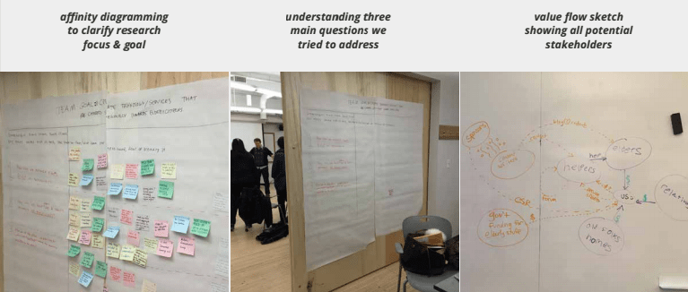
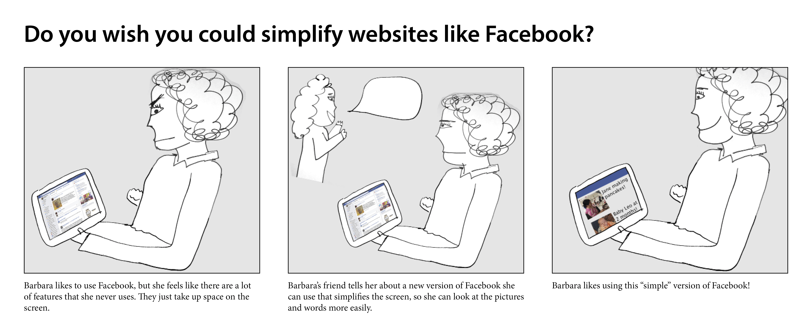

My Role
UX Designer
Project Type
Service Design, Mobile App
4 months | Feb 2015 - May 2015
Teammates
Alex Chisolm, Avanti Dabholkar, Aya Demler, Andrew Fineman, Jake Kushner
Geekline creates a marketplace that connects senior citizens with tech mentors to interactively learn to use technology in their daily lives.
This project was advised by Steven Dow and Jim Morris for Mobile Service Innovation.
Challenge
How Can We Help Elders Use Technology Independently and Confidently?
Online video tutorials, phone calls to custmer service, and gadget handbooks are incompatible with how seniors learn. Because of this, seniors rely on family members to help or ster clear of using technology all together.
Volunteer Mentorship In the Community
Geekline connects seniors with tech mentors who hold face-to-face workshops in local community locations, like the public library, YMCA, or JCC. We wanted to make sure it was as easy as possible for community organizations to offer Geekline lessons, so from their side, all they have to do is select a time, place, and lesson plan.
How It Works
Geekline is a platform where tech mentors, volunteer or paid, could sign up to help elders with specific technology learning tasks. By acting as a B2B platform, community organizations can sign up with Geekline to hold workshops that elders could attend.
Geekline solves seniors' problem regarding understanding of technology. Seniors also expressed a desire to receive personal attention in in-person or voice conversation contexts.
Tech mentors could befriend elders, as students in middle school and high school are encouraged to volunteer. This solution solves the tech mentors' problem of either wanting money or receiving volunteer credits.
In Flinto, we developed a prototype for the mobile app that a tech mentor would would use to access lessn plans and scheduling.
Design + Research Process
Targeting the Correct Segment of Seniors
Surveys and user research, including shadowing at various retirement homes, revealed that different segments of seniors exist. Some are very well off and just don't understand technology because they never used it before. Others were in poor health, so health complications like dimnishing eyesight prevented them from interacting with a screen.
Our team focused on the first user segment in our research.

__________
Speeddating Storyboards At Retirement Homes
From speeddating storyboards at retirement homes, our team leaned that seniors enjoy having access to information and want to learn to use technology through human interaction because many did not see their families often and no longer had too many friends present in their lives. Seniors also expressed a fear of security and a wish to be less dependent on others.


__________
User Enactments Were Positively Received
From the user enactment of teaching a lesson to seniors, our team confirmed that human interaction is crucial in the learning process for seniors. Many commented that they loved having someone new to talk to and looked forward to seeing the volunteer tech mentors again.
Future Work
Fleshing Out Community Organization Experience
Due to time constraints, we were only able to create a prototype of the mobile application for a tech mentor. If I were able to continue working on the project, I would begin fleshing out the web application that community organizations would log into to book workshops held at their location.